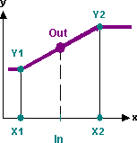
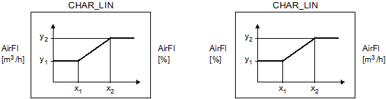

[CHAR_LIN] Characteristics with linearization
Function block CHAR_LIN uses a characteristic curve (function) to calculate an output value for each input value.
CHAR_LIN uses a linear characteristic curve (function) to calculate an output value for each input value.
This characteristic curve is defined by entering auxiliary points [X1], [X2], [Y1], [Y2]. The interpolation between the auxiliary points is linear.
CHAR_LIN calculates for each input value [In] the output value [Out] from the parameterized characteristic curve [X1], [Y1] and [X2], [Y2].
Outside the function range defined by the auxiliary points [X1], [X2], [Y1], [Y2], the output value corresponds to either the first or last auxiliary value.

The operating value of the volume flow in [m3/h] is converted into volume flow in [%] of the nominal air volume for display purposes:

| x1 = | 0 | [m3/h] | x1 = | 0 | [m3/h] |
| x2 = | nominal | [m3/h] | x2 = | 100 | [m3/h] |
| y1 = | 0 | [%] | y1 = | 0 | [%] |
| y2 = | 100 | [%] | y2 = | nominal | [%] |